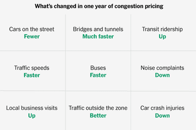
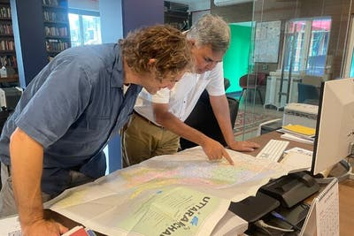

Trump says Venezuela will start handing over some oil to the U.S
Venezuela braces for economic collapse from U.S blockade
European allies agree to key sercurity provisions to Ukraine
Trump says Venezuela will start handing over some oil to the U.S
Venezuela braces for economic collapse from U.S blockade
European allies agree to key sercurity provisions to Ukraine
Pardon Jan. 6 rioters rally and demand more from Trump
Fate of 350000 Haitians at stake as court Weighs Temporary protected status0
Steohen Miller offers a strongman's view of the World
Stephen Miller offers a strongman's view of the World
Pardon Jan. 6 rioters rally and demand more from Trump
Justice Dept. memo approved military incursion into Venezuela as lawful
N.Y.C child care programs brace for cuts after federal funding freeze
Mamdani issues executive orders on homeless shelter and city jails
This activist has long been polarizing. Mamdani is standing by her
.jpg)
China sells the world on its duty free Island, amid a $1 Trillion trade surplus
Hilton drops booking for hotel accused of turning away immigration agents
Trumps claim Venezuelawill send oil to U.S
Elon Musk's xAI raises $20 billion
A.I images of Maduro speed rapidly despite safeguards
Nvidia details new A.I chips and autonomouse car projects wioth mercedes
The diminutive reptile plays rock paper scissors
She wanted to improved genetics medicine
The year in neanderthals

Aldrich Ames, C.I.A turncoat who help the soviets, dies at 84
Rose von praunheim 83, dies; captured gay life in Germany on film
Doug LaMalfa, who championed Rural Califonia in congress, dies at 65

27 million fewer cars trips: life after a year of congestion pricing
10 minute challenge: an artist in Greenland
Flashback: your weekly history quiz, jan.3,2026
Fighting through the ice without a horizon as a guide
Venezuela's dirtiest oil and enviroment: three things you need to know
The Trump administration approved a big lithuim mine. a top official husband profiled

Trial begins for former office over response to school shootin in uvaide
Eva Schloss, Anne Frnks stepsister and Holocaut survivor, die at 96
Kennedy scales back the number of vaccines recommended for children
vaccines are helping older people more than we knew
with the obamacare higher premuim come difficult decision
just before publishing a reporter recieves a crucial tip
why i cold-called president trump at 4:30 in the morning
the birth of the Times
imay be free, but the belarusian people are not
America is bad at accountability
there were good reasons to depose maduro
There were good reasons to depuse maduro
there is a sickness easting away at America democracy
the Trump revolution is going much further than we realise
Trump attack on Venuezela is illegal and unwise
Disgust over jan. 6 is no longer bipartisan
The U.S must break china's chokehold on our Economy

the 92-years old judge in the maduro case must step aside
i may be free, but the belarusian people are not
the Trump revolustion is going much further than we realise
Mamdani represent 21st century America
How did we get to such a bad Question?
One factor will decide how much you enjoy TV next year
vote on 17 ways that mayor mamdani could improve New York
mordern America opera wouldn't be the same without her
Paris opera takes on a noted conductor aiming to expand its symphonic offerings
Gabriel munter an overshadowed piller of modern art, get a spotlight
Stephen schwartz criticizes kennedy center, saying he won't host gala
Her nordic Noir is belatedly capturing New York
Bela tarr, titan of slow moving cinema is dead at 70
critics choice awards 2026 the complete winner
how kevin O'leary made his marty supreme character more cutthroat

colosal athletes fill these modern arenas
on best nedicine, josh charles has a heart
He's chevy chase and he's still like that
Mordern America Opera wouldn't be the same without her
i'm new to jazz where do i start
Paris Opera takes on a noted conductor aiming to expand it symphonic offerings>

When Sammy davis jr. knocked out broadway
julie halston sees herself in dorothy parker
A story of Hip-Hop rehabilitation with the body as battleground
Dance move from the street city Edition
A dance company of just about the fastest moving people on Earth
in Ann lee dance is the fuel for a Godly 18th century rave
Venezuelan opposition leader will publish a book in the U.S
the lowly clerk who tried to bring down the K.G.B
Read these books before they hit your screens in 2026
when sammy Davis Jr. knocked out Broadley
Julie Halston Sees herself in Dorothy Parker
A story of Hip-Hop rehabilitation with the body as battleground
Dance moves from the street, City Edition
A dance company of just about the fastest moving people on earth
In Ann Lee, dance is the fuel for a Godly 18th-century Rave
Venezuelan oposition leader will publish a book in the u.s
The lowly clerk who tried to bring down the K.G.B
Read these books before they hit your screen in 2026

How to live like a wolff
Can you optimize Love
When fashion designers amd fananciers need a suit, they go to him

Meet the old and new chinatown on one menu
Our former restaurant critics changed his eating habits. you can, too
The 10wines you should be drinking in 2026

What you should know about vaccine cut from C.D.C recommendations
Day 2: the best food for your brain
Can walking be my full workout

In Ukrain, a new Arsenal of killer A.I drones is being born
On the pit, E.R doctor try to fix the broken worldd
The revealing (and alarming) exercise of cyberstalking your own home
Are trains now the most Luxurious ways to travel?
How to stay warm this winter
The small parisian shop that's become a retail phenomenon
52 places to go in 2026
Hilton drop bookings for hotel accused of turning away immigration agents
Venezuela raid turns travelers caribbean getaways into ordeals
Rushing to her fathers hospital' beside, with a weeding in tow
what is trending in weedings for 2026
10 stand out marriage proposals
All-cash deals dominated menchattan's real estate market in 2025
how will our homes look like in 2026?
A New York fall for an LA bungalow